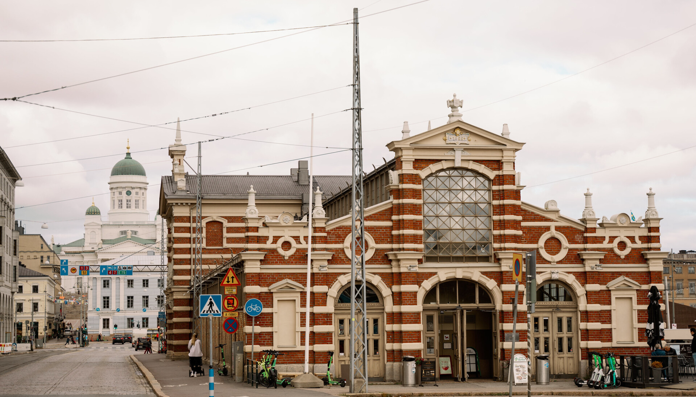
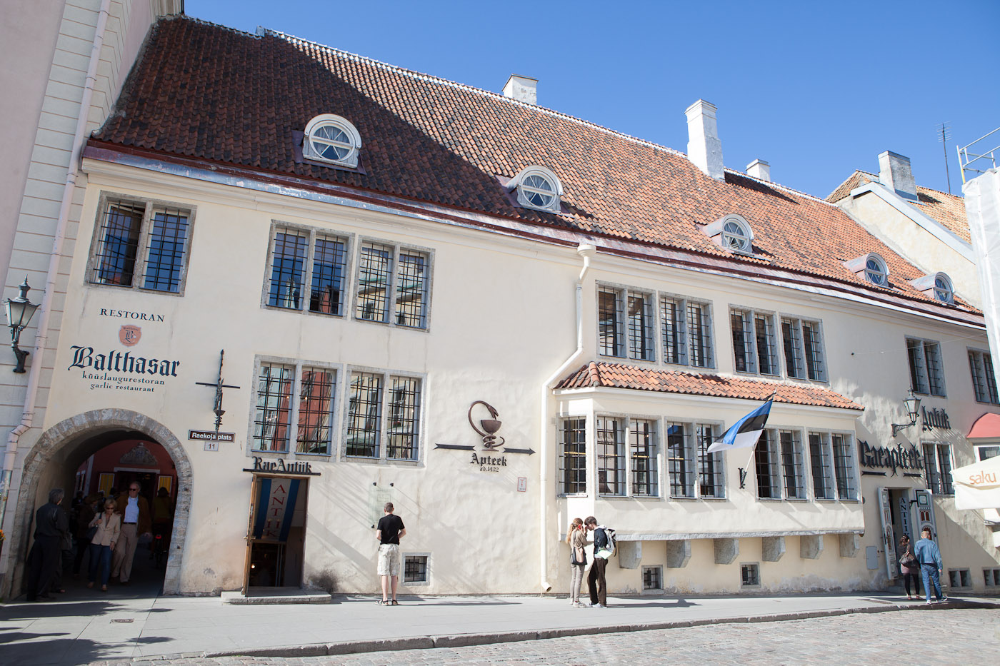
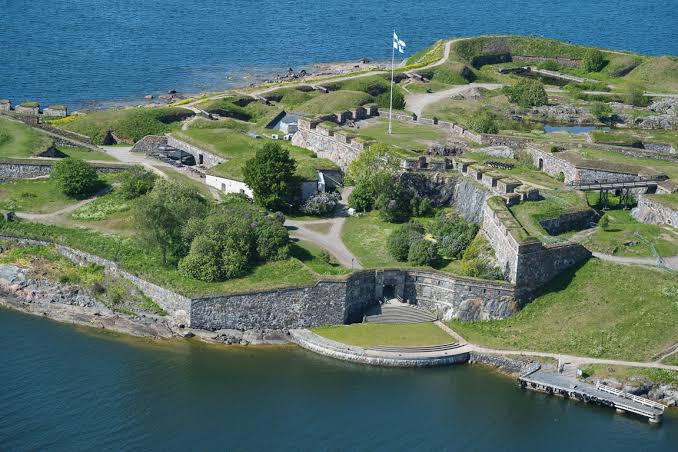
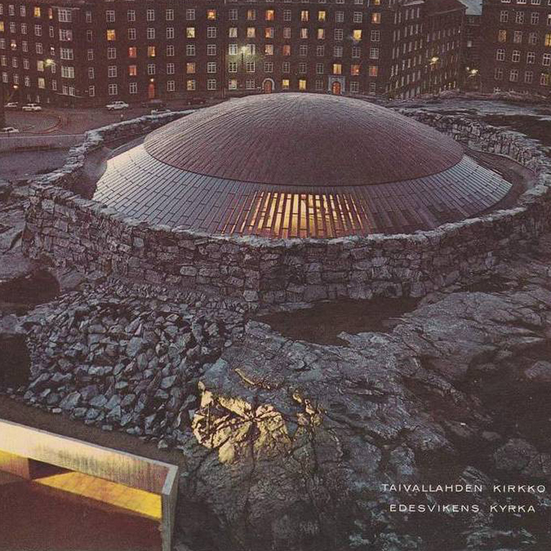

赫爾辛基 ↔ 塔林 三日遊
10/23 經典赫爾辛基 ＆ 10/24 塔林跨國一日遊 ＆ 10/25 海上要塞與極地慢活。
10/23至 10 月 25 日
波羅的海沿岸 秋季氣候預報：赫爾辛基與塔林秋季偏涼，建議穿著防風保暖衣物⚠️ 10/25 開始歐洲冬令時間，時差變為 7 小時。
住宿據點🏨 Bob W 公寓 (Helsinki)
🌤️ 雙城即時氣候資訊
赫爾辛基 (Helsinki)： 目前約 5°C，多雲。預估最高 8°C / 最低 3°C，海風強勁請注意保暖。
塔林 (Tallinn)： 目前約 6°C，晴時多雲。預估最高 9°C / 最低 4°C，舊城區石板路早晚偏涼。
1 抵達赫爾辛基
火車抵達赫爾辛基中央車站，前往 Bob W 公寓寄放行李，準備展開豐富的首都之旅。
地圖為波羅的海雙城跨國示意圖，灰色文字與灰點為周邊著名地標參考，圓角白框代表景點間的建議交通與步行時間，標記位置為相對方位參考。
Day 12：10/23 (五) 經典赫爾辛基
🏛️ 港灣、大教堂與現代建築
- 06:27火車抵達赫爾辛基中央車站 前往 Bob W 公寓寄放行李。
-
08:00 - 10:00百年老市場海鮮早餐 & 露天市集
至 Vanha Kauppahalli 享用熱氣騰騰的芬蘭鮭魚湯與魚子醬點心。順遊旁邊的 Kauppatori 市集廣場，感受港灣晨間風情。


-
10:00 - 11:30赫爾辛基大教堂與元老院廣場
參觀市區地標赫爾辛基大教堂與歷史悠久的元老院廣場。

-
11:30 - 12:30烏斯佩斯基大教堂 (Uspenski Cathedral)
沿港灣步行至北歐最大的東正教堂，欣賞獨特的紅磚與洋蔥頂建築設計。

-
12:30 - 14:00百年 Karl Fazer Café 甜點午茶
造訪芬蘭國寶級巧克力品牌 Karl Fazer 旗艦總店，享用午餐、精緻甜點與道地 Hot Chocolate。

-
14:00 - 15:30頌歌中央圖書館 (Oodi)
朝聖極具現代設計感的 Oodi 圖書館，頂層可遠眺芬蘭議會大廈，感受獨特的公共空間美學。

- 15:30Bob W 公寓 Check-in 入住辦理，回房盥洗、稍作休息補眠。
-
18:00 - 20:30Savotta 芬蘭傳統鄉村晚宴
於大教堂旁的 Savotta 餐廳，品嚐馴鹿肉、野生莓果與傳統芬蘭鄉村料理。

Day 13：10/24 (六) 中世紀童話
🏰 赫爾辛基 ↔ 塔林跨國一日遊
⚠️ 提醒： 跨國渡輪需提前預訂（推薦 Tallink 或 Viking Line，單程約 2 小時）。
- 07:00 - 09:30搭乘渡輪橫渡波羅的海 前往西碼頭（West Terminal）搭乘 07:30 或 08:00 班次渡輪前往愛沙尼亞首都塔林。
-
10:00 - 12:00上城區觀景 (Toompea) & 雙教堂
參觀 Toompea Castle & 亞歷山大·涅夫斯基大教堂，並至 Kohtuotsa / Patkuli 觀景台俯瞰塔林舊城區經典紅屋頂與海景。
.jpeg)
-
12:00 - 13:30塔林第一名店午餐
於 Rataskaevu 16 享用高評價的愛沙尼亞原創料理（需提早預約）。

-
13:30 - 14:30市政廳廣場 & 塔林古藥局
探索下城區，造訪歐洲最古老且仍營運中的藥局 (Raeapteek)。

-
14:30 - 15:30聖凱瑟琳小巷 (Katariina Käik)
漫步於充滿手作工坊與中世紀石牆拱門的夢幻小巷。

-
15:30 - 16:30維魯門 (Viru Gate)
拍攝塔林最具代表性的古城門，沉浸於中古世紀氛圍。
.jpeg)
-
16:30 - 18:00Restoran Olde Hansa 中世紀主題晚餐
體驗燭光、古裝侍者與傳統蜂蜜酒的中世紀盛宴。

- 18:30 - 20:30搭船返抵赫爾辛基 搭乘回程渡輪返抵赫爾辛基，返回公寓休息。
Day 14：10/25 (日) 海上要塞與極地慢活
🌊 芬蘭堡、岩石教堂與桑拿體驗
-
08:30 - 09:30Café Engel 經典早餐
於參事宅邸建築內的 Café Engel 享用早餐，靜靜欣賞窗外的赫爾辛基大教堂。

-
09:30 - 12:30Suomenlinna 芬蘭堡海上要塞
自市集廣場碼頭搭乘短程渡輪（約 15 分鐘）前往世界文化遺產「芬蘭堡」。漫步於古老砲台、城牆與國王門。

- 13:00 - 14:00市集廣場 / 老市場輕食午餐 返回本島，於市集廣場品嚐現煎鮭魚或炸白魚。
-
14:30 - 15:30Temppeliaukio 聖殿廣場教堂（岩石教堂）
造訪開鑿於天然花崗岩中的建築奇蹟。

-
15:30 - 16:30Design District 設計街區散策
探索芬蘭設計品牌（如 Marimekko, Iittala, Artek）與精緻選物店。

- 17:00 - 19:00Bob W 公寓私房三溫暖 (Sauna) 回到公寓享用專屬三溫暖設施，深度放鬆連日旅途的疲勞。
- 19:30 - 21:00市區溫馨晚餐 可至附近的熱門餐廳（如 Nokka 或 Juuri）享用新北歐料理，或利用公寓廚房自炊。